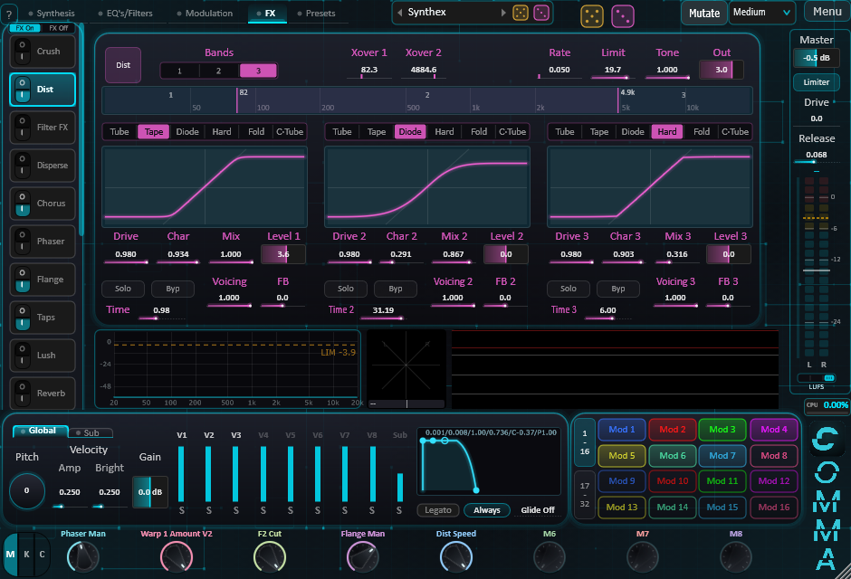

Eight engines
Add, Impact, Chaos, Logic, Shard, Wave, Sample and Noise. Each voice picks its own.
Eight voices. Eight engines. One instrument.
Comma stacks eight voices, each tuned to the next by a ratio rather than a note. Give every voice its own engine, shape it with its own modules, and let thirty-two modulators move everything.
From glassy additive pads to physical impacts and chaotic textures, Comma is made for sounds that breathe and drift.
Windows 10 / 11 (64-bit) · VST3 plugin and standalone application

Add, Impact, Chaos, Logic, Shard, Wave, Sample and Noise. Each voice picks its own.
Eight voices stacked by ratios: harmonic chords, inharmonic bells, or anything in between. Ratio presets included.
Dissonance, Motion, PM, Pluck, Spectron, Capture, Warp, Mangle, Transient, envelopes: each voice is shaped on its own.
Crush, Dist, Filter, Disperse, Chorus, Flange, Phaser, Taps, Lush, Reverb, Cloud, Delay, Prism, two EQs, Sidechain, Spatial and multiband Dynamics. The chain runs in the order you choose.
Thirty-two modulators (Curve, Random, Chaos, Step, Envelope, Follow) and eight macros. Drag a modulator onto any control.
Dice on every section for happy accidents, a preset browser with tags and folders, and a clean output stage with a limiter.

From 30 € · pay what you want